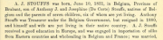

Profile of A. J. Stouffs (b. 1831) from historical Whitley county (Indiana) book in 1882
 Profile of A. J. Stouffs (b. 1831) from historical Whitley county (Indiana) book in 1882.
Citation
Weston A. Goodspeed and Charles Blanchard, editors. "A. J. Stouffs," Counties of Whitley and Noble, Indiana: historical and biographical. 1882 (F. A. Battey & Co., Publishers, Chicago, IL), page 271 [Columbia City section], accessed on the Internet Archive at https://archive.org/stream/countiesofwhitle00good#page/n274/mode/1up.
Transcript of Profile [paragraphs, emphasis and lists added]
A. J. STOUFFS was born, June 10, 1831, in Belgium, Province of Brabant, son of Anthony J. and Josephine (De Corte) Stouffs, natives of Belgium and the parents of seven children, six of whom are yet living.
Anthony Stouffs was Treasurer under the Belgium Government, but resigned in 1880, and himself and wife are yet living in their native country.
A. J. Stouffs
- received a good education in Europe, and
- was engaged in importation of silks from Eastern countries and wholesaling in Belgium and France;
- was married, December 27, 1852, to Miss Zelia Steyls, and,
- on December 21, 1859, took passage, with his family, on board the steamer "Kangaroo," bound from London to New York,
- arriving in this country January 11, 1860, since which time the West has been his home.
He came to Illinois, engaged in farming and buying wheat, and was for a time in Chicago, selling goods.
In 1864, he came to Hobart, Ind., where he was engaged, in the capacity of freight clerk, by the P., Ft. W. & C. R. R. Co., and in 1865 came to Columbia City in the same capacity, where he has ever since remained.
In 1867, he assisted in the establishment of a flax mill, which was burned in 1868.
He is now retired from active labor, but assists his son, Arthur, who owns and runs a first-class grocery store near the depot, and "lends a hand" on the home farm of 175 acres.
Mr. and Mrs. Stouffs are parents of five children [possibly in birth order] —
- Anna,
- Arthur,
- Mary [wife of William E. Meyers],
- George and
- Blanche.
Mr. Stouffs is a Democrat and himself and wife are members of the Roman Catholic Church.